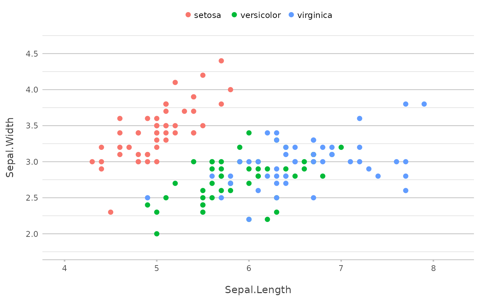
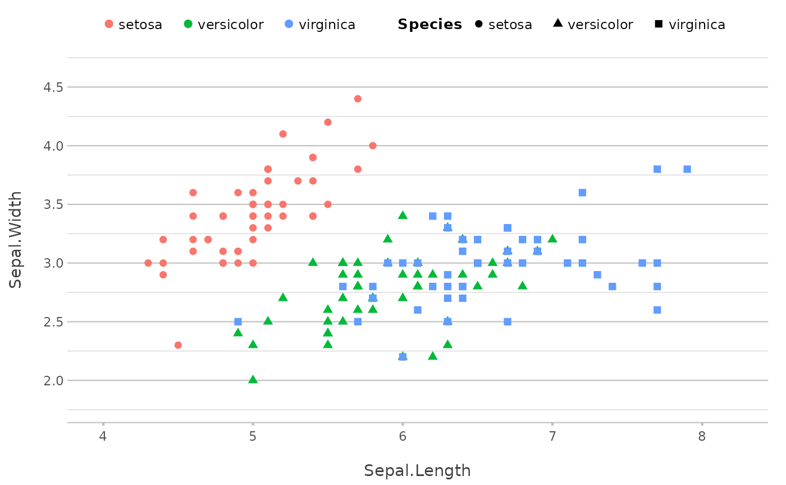

This function can be used to adjust the mapping of a plot.
Arguments
- plot
A
ggplot2plot.- ...
Arguments passed on to
ggplot2::aes().
Examples
p <- iris |> plot2(Sepal.Length, Sepal.Width, Species, zoom = TRUE)
#> ℹ Using type = "point" since both axes are numeric
p

p |> add_mapping(shape = Species)
